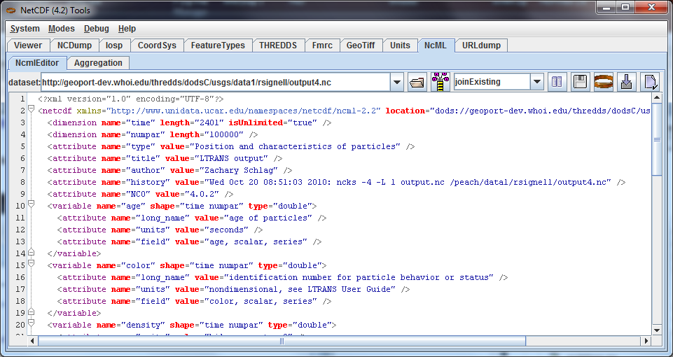

The NetCDF-Java / CDM library reads many different binary file formats besides netCDF, such as HDF, GRIB, NEXRAD, etc, and makes the data accessible through a standard API. It can also read remote datasets through OPeNDAP and other remote access protocols. As we will see, by using NcML one can also create virtual datasets by modifying and aggregating other datasets. In the general case, we will call any collection of scientific data which can be accessed through the NetCDF-Java / CDM library a CDM dataset.
The NetCDF Markup Language (NcML) is an XML dialect that allows you to create CDM datasets. An NcML document is an XML document that uses NcML, and defines a CDM dataset. Commonly, the NcML document refers to another dataset called the referenced CDM dataset. The purpose of NcML is to allow:
In the following, we will use the ToolsUI application to work with NcML datasets. ToolUI is a GUI interface to much of the functionality in the CDM library. You may also use a specialized XML editor like Oxygen or XML Spy, or an IDE like IntelliJ, Eclipse, or NetBeans that have context-sensitive XML editing.
For these exercises, you should run ToolsUI from webstart or download the ToolsUI application and run it locally from the jar.
Use the ToolsUI NcML Tab to generate NcML from the CDM file by entering the the URL of a local or remote
CDM dataset, or browse  to a local file. The NcML of
the dataset is generated and displayed:
to a local file. The NcML of
the dataset is generated and displayed:

Entering a file that ends with xml or ncml simply displays the NcML file directly.
Download example1.nc and exercise1.ncml and place them in the same directory. Open exercise1.ncml in the in the NcML tab:
<?xml version="1.0" encoding="UTF-8"?>
<netcdf xmlns="http://www.unidata.ucar.edu/namespaces/netcdf/ncml-2.2" location="example1.nc">
<dimension name="time" length="2" isUnlimited="true" />
<dimension name="lat" length="3" />
<dimension name="lon" length="4" />
<attribute name="title" type="String" value="Example Data" />
<variable name="rh" shape="time lat lon" type="int">
<attribute name="long_name" type="String" value="relative humidity" />
<attribute name="units" type="String" value="percent" />
</variable>
<variable name="T" shape="time lat lon" type="double">
<attribute name="long_name" type="String" value="surface temperature" />
<attribute name="units" type="String" value="C" />
</variable>
<variable name="lat" shape="lat" type="float">
<attribute name="units" type="String" value="degrees_north" />
<values>41.0 40.0 39.0</values>
</variable>
<variable name="lon" shape="lon" type="float">
<attribute name="units" type="String" value="degrees_east" />
<values>-109.0 -107.0 -105.0 -103.0</values>
</variable>
<variable name="time" shape="time" type="int">
<attribute name="units" type="String" value="hours" />
<values>6 18</values>
</variable>
</netcdf>
In this example, data for the lat, lon and time coordinate variables comes from the NcML document, while the data for the rh and T variables will be obtained from the referenced dataset example1.nc.
Open exercise1.ncml in the ToolsUI NCDump Tab. This creates the following NetCDF Dataset, in CDL notation:
netcdf file:C:/temp/exercise1.ncml {
dimensions:
time = UNLIMITED; // (2 currently)
lat = 3;
lon = 4;
variables:
int rh(time, lat, lon);
:long_name = "relative humidity";
:units = "percent";
double T(time, lat, lon);
:long_name = "surface temperature";
:units = "C";
float lat(lat);
:units = "degrees_north";
float lon(lon);
:units = "degrees_east";
int time(time);
:units = "hours";
// Global Attributes:
:title = "Example Data"; data:
lat = 41.0, 40.0, 39.0;
lon =
-109.0, -107.0, -105.0, -103.0;
time = 6, 18;
}
Note that the name of the dataset is the name of the NcML file, not the referenced dataset.
Allowable forms of the referenced dataset location are:
Open exercise1.ncml in the in the ToolsUI Viewer tab: Select a variable by left clicking on it, then right click to get the context menu.

From the context menu, select NCdump Data, which brings up a popup window. Click the NCdump button to show the variable's data:

The expression T(0:1:1, 0:2:1, 0:3:1) shows the limits of the T variable's data array in Fortran 90 notation. For example, 0:3:1 means that the index starts at 0, ends at 3 (inclusive) with stride 1. You can use a single value to slice at that index, eg T(1, 0:2:1, 0:3:1) means to show the T array for index=1 on the first (time) dimension. For large data arrays, it is often useful to edit this expression, especially the stride, to examine subsets of the data.
Repeat this for other variables to familiarize yourself with examining data values.
In the ToolsUI NcML Tab, browse to your data directory and open the data file example1.nc directly (not the NcML file exercise1.ncml). The NcML is generated directly from the CDM file itself:

Since this NcML is generated from the file itself, it is equivalent to just naming the file and allowing all of the metadata to be taken from it:
<netcdf xmlns="http://www.unidata.ucar.edu/namespaces/netcdf/ncml-2.2" location="C:/temp/example1.nc">
This form is useful in aggregations but not for much else.
In this example, we read in all of the metadata from the referenced dataset, and modify it through elements in the NcML.
Download exercise3.ncml and place it in the same directory as example1.nc. Open exercise3.ncml in the ToolsUI Viewer tab, and in the NcML tab.
<?xml version="1.0" encoding="UTF-8"?>
<netcdf xmlns="http://www.unidata.ucar.edu/namespaces/netcdf/ncml-2.2" location="example1.nc">
(1)<attribute name="title" type="String" value="Example Data using CF" /> (2)<attribute name="Conventions" value="CF-1.0" />
(3)<variable name="RelativeHumidity" orgName="rh">
(4) <attribute name="standard_name" type="String" value="relative humidity" />
</variable>
<variable name="T">
(5) <attribute name="standard_name" type="String" value="temperature" />
(6) <attribute name="units" type="String" value="degreesC" />
</variable> (7)<variable name="deltaLat" type="double" shape="lat"> <values>.1 .1 .01</values> </variable>
</netcdf>
This creates the following NetCDF Dataset.
netcdf file:C:/temp/exercise3.ncml {
dimensions:
time = UNLIMITED; // (2 currently)
lat = 3;
lon = 4;
variables:
int RelativeHumidity(time=2, lat=3, lon=4);
:long_name = "relative humidity";
:units = "percent";
:standard_name = "relative humidity";
double T(time=2, lat=3, lon=4);
:long_name = "surface temperature";
:units = "degreesC";
:standard_name = "temperature";
float lat(lat=3);
:units = "degrees_north";
float lon(lon=4);
:units = "degrees_east";
int time(time=2);
:units = "hours";
double deltaLat(lat=3);
:title = "Example Data using CF";
:Conventions = "CF-1.0";
}
Using NcML in this way to modify the contents of a CDM dataset is a kind of declarative programming. We say that the NcML wraps the referenced dataset. Note that you can't tell what the resulting dataset looks like without also examining the referenced dataset. If one adds an <explicit/> element to the NcML, then the metadata in the referenced dataset is not read in, the result dataset is defined entirely by whats in the NcML, and the referenced dataset is only used for data values. However in practice <explicit/> is not used much.
A typical scenario is to modify an existing dataset with NcML, save the NcML, and use it instead of the original dataset.
In the ToolsUI NcML Tab, browse to your data directory and again open the data file example1.nc
directly. The NcML is generated and displayed. Make some simple modifications, changing an attribute value or adding
a new attribute. Save the NcML to disk  . Note that the
default NcML filename will be the original file name with the extension changed to ncml. Save the
NcML to example1.ncml.
. Note that the
default NcML filename will be the original file name with the extension changed to ncml. Save the
NcML to example1.ncml.
In the ToolsUI Viewer Tab, open example1.ncml and examine it. Does it look like what you expect? Try making different kinds of mistakes to see what error messages (if any) that you get. By switching between the Viewer tab and the NcML tab, you can quickly try out different things.
The NcML tab offers no error checking, its really just a text editor. You may find XML-aware editors very useful for finding syntax mistakes in your NcML.
You can generate a NetCDF-3 file from an NcML file, and the equivalent binary NetCDF file will be created with all
the original data copied to it. Since the binary data is taken from the original file, this is an efficient way to
make a copy, even for large files. In the ToolsUI NcML Tab, bring up an NcML file that doesn't have any mistakes in it. Generate a
NetCDF-3 file from the NcML  , saving it to some new
and uniquely named file. Now bring up that file in the ToolsUI Viewer Tab and examine it. It should
be identical to the NcML file that generated it.
, saving it to some new
and uniquely named file. Now bring up that file in the ToolsUI Viewer Tab and examine it. It should
be identical to the NcML file that generated it.
This feature works as long as you are using only netCDF-3 compatible features (aka netCDF classic model). In practice this mostly means no Structures or Groups. Strings are ok, and are converted to type char. The equivalent Java code to do this is:
NetcdfDataset ncfileIn = NcMLReader.readNcML (ncml_filename, null); FileWriter2 writer = new ucar.nc2.FileWriter2(ncfileIn, locationOut, NetcdfFileWriter.Version.netcdf3, null); NetcdfFile ncfileOut = writer.write(null); ncfileOut.close(); ncfileIn.close();
See also: Annotated NcML Schema
Next: Aggregation
 This document is maintained by John
Caron and was last updated July 2013
This document is maintained by John
Caron and was last updated July 2013